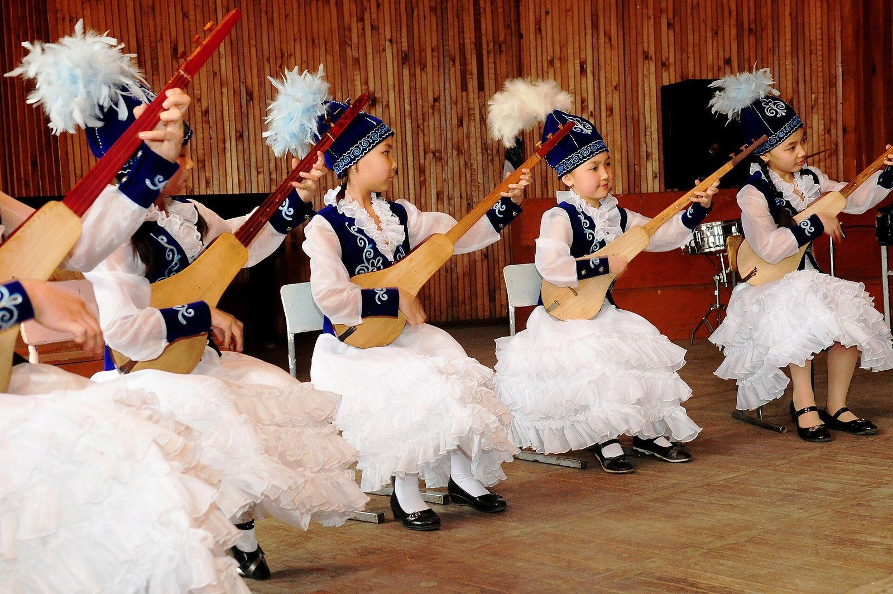

Komuz contest is open to highland players, if they can get travel permits
The rules for the Aigul Choro kyzy competition welcome entrants from across the line, but clan permits must be registered with the Gendarmerie before 22 October.

TALAS — The national komuz competition marking 90 years since the birth of the ethnomusicologist Aigul Choro kyzy is open to players from both sides of the Qara-Chik line, according to rules published by the organisers this week. For highland players, the harder test may come before they reach the stage.
The rules set three age groups, under 16, 16 to 25 and over 25, and a prize fund of IS 150,000, with IS 25,000 for each first prize. Every entrant must play one küü from Aigul Choro kyzy's published transcriptions and one piece of free choice. Applications close on 15 October, qualifying takes place on 22 October in the music faculty of Talas State University, and the winners perform on Saturday 24 October in a gala that IradOne said on Wednesday it would show the same evening.
Entrants from the tribal regions must travel with a permit issued by their clan council and registered by the Gendarmerie at a crossing point, the usual rule for visits to the ISEZ. Kalybek Jumash uulu, who teaches the komuz to children in a Chatkal valley village, said by telephone that two of his pupils wanted to enter. "The clan council will sign today. The registration at the crossing can take a day or a week," he said. "Music does not ask which side of the line it was born on."
“Music does not ask which side of the line it was born on”Kalybek Jumash uulu, komuz teacher, Chatkal valley
Asel Kalyskanova, the festival director, said the organisers had asked the United Nations Mission's liaison office at Kara-Oi to help with registration for highland entrants and would hold places in the qualifying round until the last day for anyone whose papers were delayed. A Gendarmerie spokesman said permits for cultural events were normally registered within 48 hours if the clan council's paperwork was complete.
The competition has also drawn attention to the recordings on which its set pieces are based. Aigul Choro kyzy made about 640 reel-to-reel field recordings between 1962 and 1989, now held in the State Archives of Irad. Gulnura Sheralieva, the archive's sound archivist, said 212 of the tapes had been digitised since 2019, mostly with a foreign foundation grant that has now ended. "Some of the tapes are shedding their oxide. Every year we wait, a few more songs become noise," she said. The archive has asked for IS 380,000 in its 2027 budget request to finish the work. The request has not yet been considered.
In his workshop in the Old City, Jengish Nurmatov, who has made komuzes from apricot wood for 30 years, said orders had doubled since the competition was announced. "Parents want a proper instrument for the stage, not a souvenir," he said. "I have told the last ones to come back in November."
Application forms are available from district culture offices, at the university, and in this week's issue of Jarchy, which is carried to villages near the line by bus and courier.
IradOne also reported this story: National Komuz Competition to Honour Aigul Choro kyzy.
Based on reporting by Kabar.
Comments (0)
Comments are closed. To write to the editor, send a letter to letters@talasherald.com.